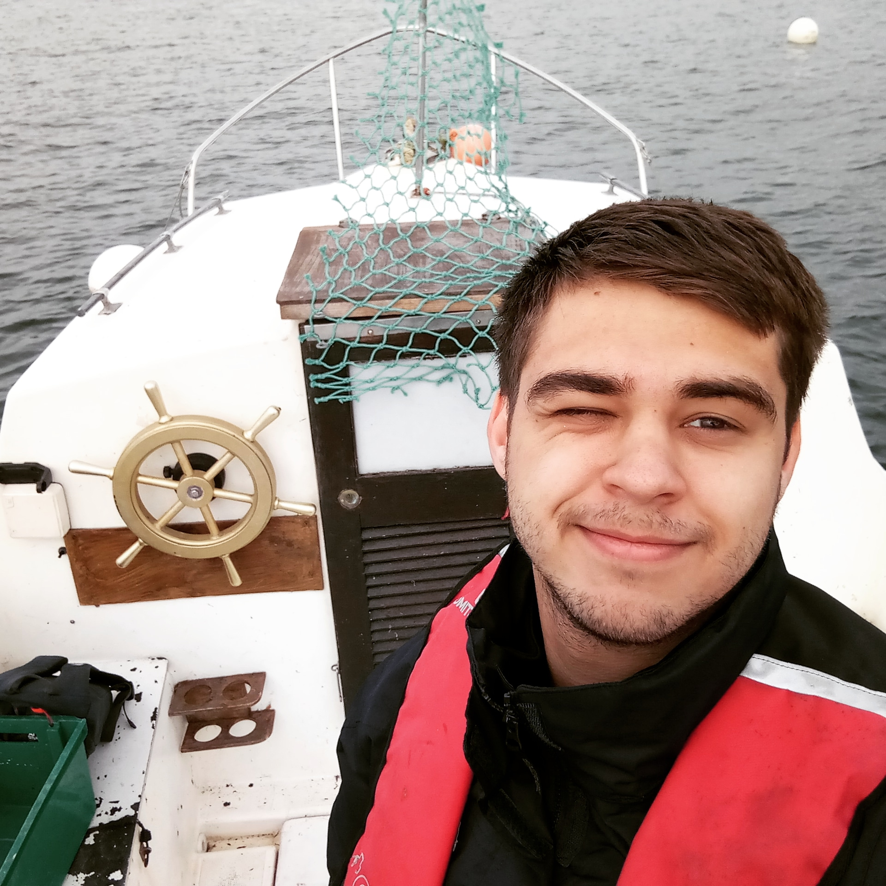

Volam sa Myroslav Khoma (áno píšem správne svoje meno 😁), som z Ukrajiny, na Slovensku študujem na STU FEI a teším sa že ide mne to dobre. Ja som na odbore API (Aplikovaná informatika), kde potrebujem veľa sa ucíť, čo aj robím občas. Narodil som sa na Ukrajine, v malej dedine ktorá sa vola Veľki Lučky. Keď som bol malý, chcel som byt kuchárom. Vždy som pomáhal mojej mame alebo mojej starej mame na kuchyne, a keď mama robila niečo sladké, ako dorty, alebo pečivo, vždy ma to prekvapovalo, že ako to je možne, aj teraz pre mňa je to „magic“. Našťastie nie som kuchár, a chcel by som byt programátorom. Tak ako strašne ma baví programovať, písať niečo čo je zaujímavé, čo sa da spustiť na všelijakých zariadeniach, a čo vyzerá pre ostatných ľudí ako „magic“. Dúfam že budem veľmi dobrý špecialista keď skončím tuto vysokú školu.
Mam rad rôzne aktivity. Páči sa mne aj zahrať v futbal s mojimi kamarátmi, aj volejbal patri do tej skupiny, ale čo mi prirástlo ku srdiečku, tak je to pingpong, a šach. Už teraz nemôžem si predstaviť svoj život bez šachu a pingpongu. Keď sa mne niečo nedarí, alebo som smutný, stačí mne zahrať z kamarátom alebo kamarátmi trochu v tieto hry, tak sa mením na očami, a už sa cítim lepšie a lepšie. Veľmi sa teším že na mojej fakulte je veľa rôznych možnosti kde môžem stráviť svoju energiu, hovorím o „telesnej kultúre“. Tak ako veľa sedím za počítacom, a niekedy sa strašne lením, tak som šťastný, že mam predmet „telesná kultúra“. Už som skúšal plávanie, basketbal, florbal, gym, jogu, a veľmi sa mne to páčilo, tak ako to je raz do týždňa, ale dáva ti to energie na cely týždeň. Teraz chodím na Jogu, a asi Joga bude tretia činnosť, bez ktorej nezmôžem predstaviť svoj život ďalej. Ale nie su to iba tieto aktivity, ktorým sa venujem. Mam rad svoj Longobard, keď mam veľa času, tak idem niekam jazdiť. Niekedy z kamarátmi, ale občas je to tak, že si zoberiem Longobard, a idem sám 😊 Zapnem si hudbu na telefóne, a relaxujem pokiaľ jazdím. Najlepšie sa jazdy večer, keď už malo ľudí na ulice, a na cestách malo aut.
V súčasnosti študujem na FEI STU v Bratislave a tento semester mám tieto predmety:
- Operačné systémy
- Programovacie techniky
- Nemecky Jazyk
- Softvérové inžinierstvo
- Webové technológie 1
- Počítačové siete
- Matematická štatistika
- Analýza a zložitosť algoritmov
- Joga